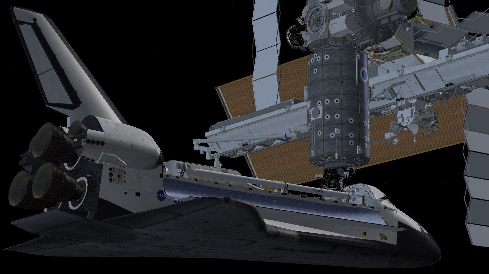

International Space Station v3.2のダウンロード+インストール
International Space Station v3.2は、1998年から2007年までのISS（国際宇宙ステーション）の打ち上げ・組み立て・補給を再現した大型MODです。
現時点では、Orbiter2010にしか対応していません。
ダウンロードとインストール
以下の4つのMODをダウンロードしてください。
順番に解凍して、Orbiterのインストールフォルダに上書き。
- Proton Launch Vehicle v.2.2
- Soyuz FG/U v1.2
- Space Shuttle Fleet V4.8 Release 2
- International Space Station v.3.2
MODの導入方法についての詳しい解説はこちら。
操作ガイド
ISS v3.2の特徴
- スペースシャトルやプロトンロケットによる、ISSを構成するモジュールの打ち上げ。
- ソユーズ・スペースシャトルによる、地上とISSの往復。
- ロボットアームによるISSの組み立て。
- プログレス宇宙船による物資の補給と廃棄物の処理。
- 宇宙飛行士によるEVA。
- ISSの姿勢制御とソーラーパネルの向きのシミュレーション。
- LC39発射台の追加などグラフィックの強化。
ISSの建設と維持にかかわるさまざまな作業を、手軽に追体験することができます。
各モジュールや宇宙船の再現度が高く、見ているだけでも楽しめます。

2008年以降のミッションについては再現されていません。
以下のMODを導入したうえで、シナリオを自作すれば「きぼう」などの打ち上げを再現することも可能です。
ISS A to Zのインストールと設定